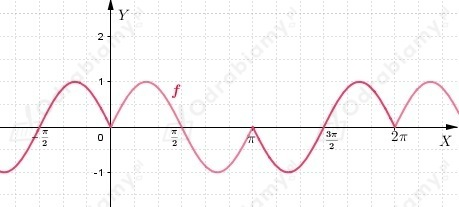
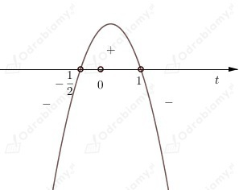

Z treści zadania wiemy, że punkt
Do obliczenia wartości wyrażenia
należy obliczyć wartości
Wiemy, że
(x - pierwsza współrzędna punktu P; y - druga współrzędna punktu P)
Zatem korzystając z definicji funkcji trygonometrycznych dostajemy
Wracając do wyrażenia otrzymujemy
Odp: Trzy pierwsze cyfry po przecinku otrzymanego wyniku, to 131.
Obliczmy wartość podanego wyrażenia
Zatem
Odp: Cyfra jedności i dwie pierwsze cyfry po przecinku rozwinięcia dziesiętnego otrzymanego wyniku, to 069.
Wiemy, że
Wyznaczmy cosinus kąta x.
Korzystając z tożsamości trygonometrycznej dostajemy
zatem
Z jedynki trygonometrycznej dostajemy
Odp: Trzy pierwsze cyfry po przecinku rozwinięcia dziesiętnego otrzymanej liczby, to 554.
Z treści zadania wiemy, że liczba a jest najmniejszym dodatnim pierwiastkiem równania
Zatem, aby wyznaczyć wartość liczby a należy rozwiązać powyższe równanie.
Z wykresu funkcji sinus możemy odczytać, że
Zauważmy, że najmniejszym dodatnim pierwiastkiem równania jest 1/12.
Więc
Odp: Pierwsze trzy cyfry po przecinku rozwinięcia dziesiętnego liczby a, to 083.
Z treści zadania wiemy, że
Przekształćmy wzór funkcji f
Naszkicujmy wykres funkcji f.

Określmy liczbę rozwiązań równania
w zależności od wielkości parametru m korzystając z wykresu funkcji f.
Zauważmy, że funkcja g jest funkcją stałą.
Więc wnioskujemy, że równanie f(x)=m ma
Rozwiążmy równanie
Przekształćmy równanie
Zatem liczby spełniające równanie, które należą do przedziału ⟨-2𝜋; 2𝜋〉, to
Rozwiążmy równanie
Zastosujmy podstawienie
Dostajemy równanie kwadratowe
Powracamy do zmiennej x
Zatem
Rozwiązania równania, które należą do przedziału ⟨0; 4𝜋〉, to
Wnioskujemy, że suma pierwiastków równania należących do przedziału ⟨0; 4𝜋〉 jest równa
Rozwiążmy równanie
Korzystamy ze wzoru na sinus sumy kątów
Korzystamy ze wzoru na sinus różnicy kątów
Równane
może być kwadratowe lub liniowe (w zależności od współczynnika przy x2).
Równanie ma dwa różne pierwiastki, gdy jest kwadratowe, czyli wtedy i tylko wtedy, gdy zachodzą warunki
Ad. 1)
Z wykresu funkcji cosinus, odczytujemy, że w przedziale (0; 𝜋) mamy
zatem
Ad. 2)
Wyznaczmy te wartości parametru 𝛼 ∈ (0; 𝜋) dla których △>0
Rozwiązujemy powyższą nierówność
Zastosujmy podstawienie
Dostajemy nierówność
Obliczmy miejsca zerowe funkcji zmiennej t

Zatem
Powracając do zmiennej 𝛼 otrzymamy
Więc z wykresu funkcji cosinus możemy odczytać, że w przedziale (0; 𝜋)
Łącząc warunki 1) i 2), otrzymujemy, że
Aby powyższe równanie miało dwa różne pierwiastki (x1, x2), to musi być spełniony warunek:
Wiemy, że suma kwadratów tych pierwiastków ma być większa od 8, zatem
W zadaniu należy rozwiązać układ nierówności
Rozwiążmy pierwszą nierówność
Z wykresu funkcji sinus odczytujemy, że powyższa nierówność jest spełniona dla
Zauważmy, że korzystając ze wzorów Viete'a możemy drugą nierówność rozwiązać następująco
Z wykresu funkcji sinus odczytujemy, że powyższa nierówność jest spełniona dla
Otrzymujemy rozwiązania nierówności w postaci
Zatem rozwiązaniem układu nierówności, a tym samym zadania jest część wspólna tych przedziałów, więc